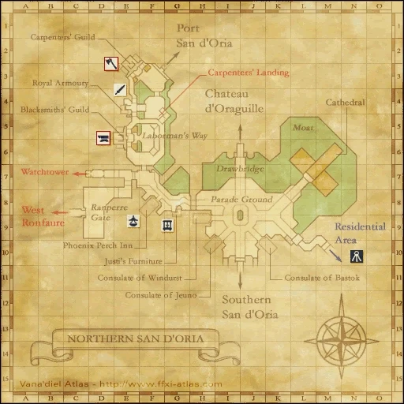
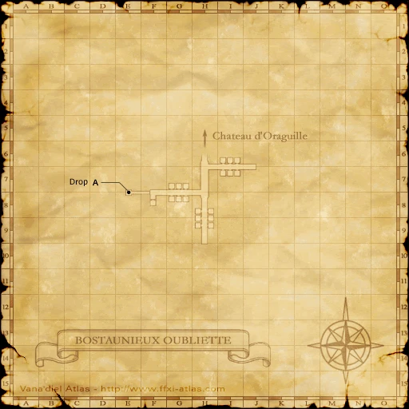
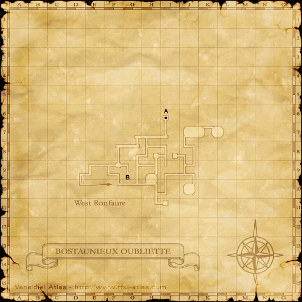
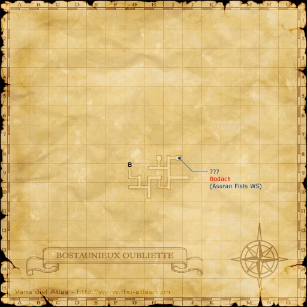
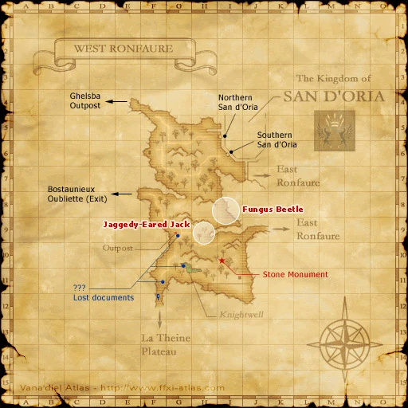

Before you begin
Be allied with San d'Oria, have Rank 7, and finish the preceding required story steps. Raise Rank Points if the mission is not offered.
Accept the mission before following its route. If the guard does not offer it, finish your current mission and any closing scenes, then raise Rank Points with crystals at a Conquest guard if required.
Items and key items
| Item — open for its source | Type | Where it comes from |
|---|---|---|
| Ancient San d’Orian Tablet | Key item | Defeat Marauder Dvogzog on the raised West Ronfaure ledge (E-8), then examine the ??? again. |
Walkthrough
Take the cathedral assignment
- Accept Prestige of the Papsque. Examine the Papal Chamber upstairs in the cathedral in Northern San d’Oria.
Reach the isolated ledge
- Enter Bostaunieux Oubliette through Chateau d’Oraguille. Speak to Couchatorage by the sewer lid on map 1 (E-7) to descend.
- Follow the lower route to the exit at map 2 (E-10). This brings you onto the raised West Ronfaure ledge at (E-8); walking there directly from the city does not reach the ledge.
Defeat the guardian
- Examine the ??? on the ledge to summon Marauder Dvogzog. Be ready to survive Hundred Fists.
- After defeating it, examine the ??? again for the Ancient San d’Orian Tablet. Do this before jumping off the ledge.
- Return to the Papal Chamber and finish the mission scene.
Completion and reward
Rank Points
Area maps
Open a zone below, then select a map to enlarge it. Match the named floors and grid coordinates in the steps; these are reference area maps, not a live position tracker.
Northern San d'Oria



Bostaunieux Oubliette









West Ronfaure



References
Native mission script used by the Zenith baseline · HorizonXI route and map reference
Written for Zenith from the reviewed mission steps. Battlefield conditions follow the server’s entry message; Horizon-exclusive wardrobe rewards are not part of these rewards.
Additional level-75 reference
|
Walkthrough
- Trading four stacks of crystals will give the necessary rank points for this mission.
- After accepting the mission from the gate guard, go to the cathederal and go to the Papal Chambers on the third floor.
- Form a full alliance of level 60+ characters (a party of 70+ characters can handle this mission easily).
- After a cutscene, enter Bostaunieux Oubliette. Use Silent Oils or cast Sneak before dropping down the sewer hatch at (E-7). Talk to Couchatorage.
- If you are under 65, you will get aggro from the Dark Aspics under the hatch.
- Even 75s will get aggro from the Haunts and Garm on the way to the zone.
- Hug the right wall and follow the paths until you zone into West Ronfaure at (E-10).
- Inspection of the ??? at (E-8) will spawn Marauder Dvogzog, a level 67 Orc Monk NM with about 16,000 HP.
- Once defeated, everyone needs to inspect the ??? again for the key item, Ancient San d'Orian Tablet.
- If you fall off the ledge and run back through Bostaunieux Oubliette after the NM is dead, you will need to kill him again.
- Return to San d'Oria and examine the Papal Chambers to trigger a cutscene. After the cutscene the mission is complete.
Game Description
- Mission Orders
- The papsque has requested an adventurer of renown. Speak to His Holiness in the cathedral. His chambers lie upstairs.
Adapted from Eden Wiki: Prestige of the Papsque · Contributors and history · CC BY-SA 4.0. Revision 8845. Layout, links and optional background text adapted for Zenith.